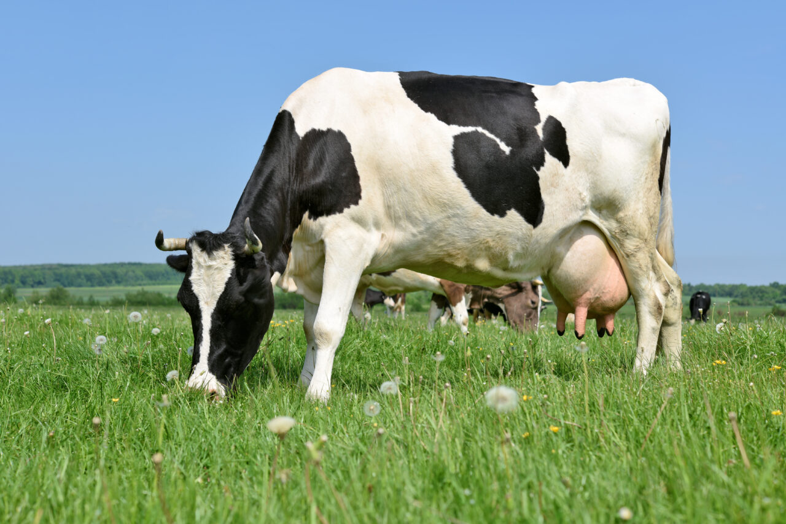
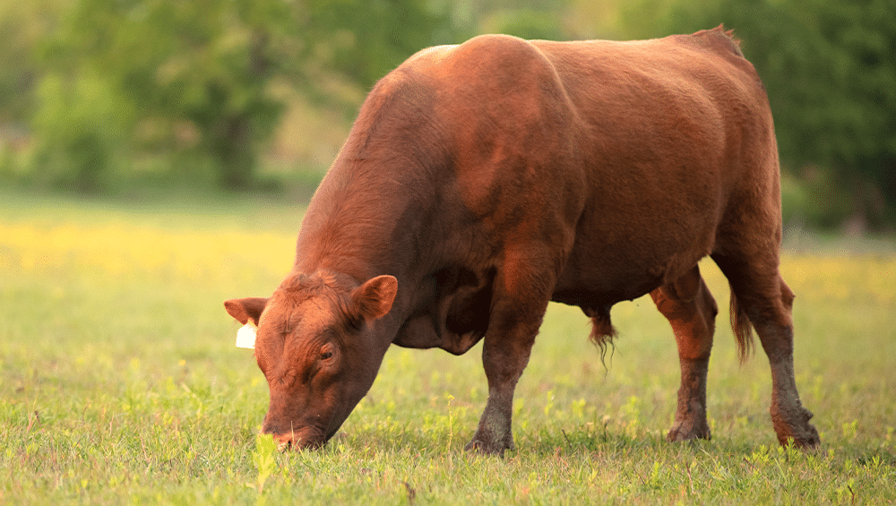
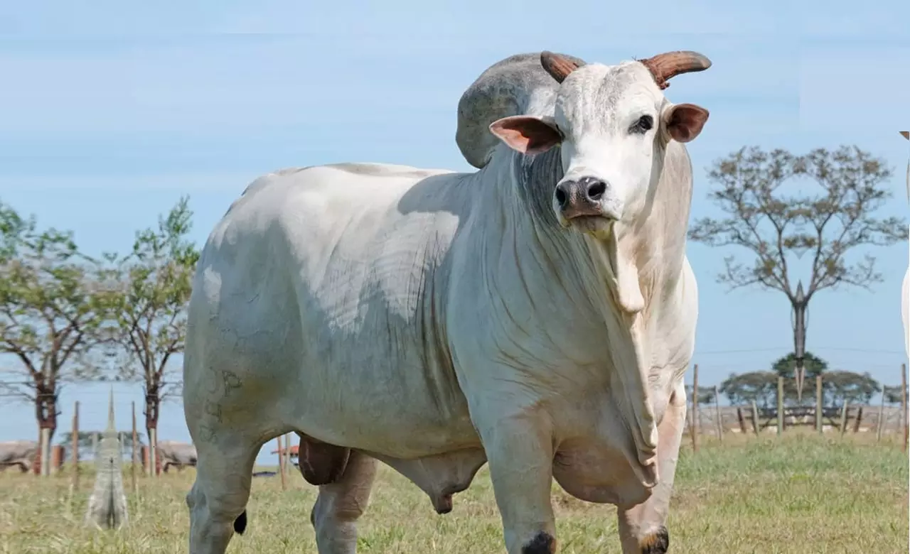

Introdução à Criação de Gado
A criação de gado é uma atividade fundamental para a agricultura e economia em muitas partes do mundo. Desde tempos antigos, os seres humanos têm criado gado para obter carne, leite, couro e outros produtos essenciais. Este setor desempenha um papel crucial na segurança alimentar global, fornecendo uma fonte sustentável de proteína animal e outros recursos. Além disso, a criação de gado influencia a paisagem rural, as práticas agrícolas e até mesmo questões ambientais, destacando-se como uma prática complexa que combina tradição, ciência e gestão eficiente.Raças de Gado
- Raça 1 
- Raça 2 
- Raça 3 
Cuidados com o Gado
Para garantir o bem-estar do gado, é importante...